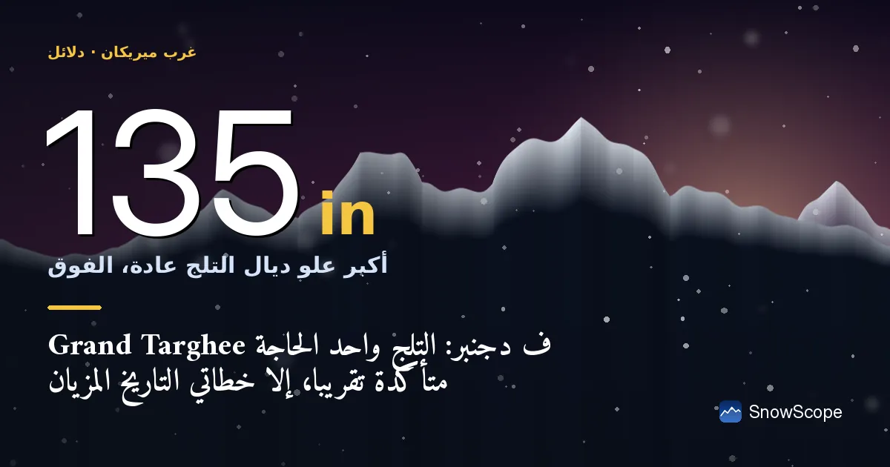

Grand Targhee ف دجنبر: التلج واحد الحاجة متأكدة تقريبا، إلا خطاتي التاريخ المزيان
الارتفاع ديال وسط الجبل فـ Grand Targhee كيضمن التلج العميق تقريبا كل شتا فـ دجنبر: 46 سم (118 سم) فـ 15 دجنبر العادي، و كل شتا ديال آخر 46 سنة كوصلو ل 20 سم (50 سم) على الأقل. القرار الحقيقي لفلوسك ماشي هل كيكون التلج، بل أنهي أسبوع تحجز.
شوف توقعات التلج مباشرة ديال Grand Targhee Resort فالتطبيق ديال SnowScopeالعلو ديال التلج، التنبيهات والخريطة 3D، فابور.
شنو العلو ديال التلج وفاش
فـ وسط الجبل، حوالي 8,720 قدم (2,658 م)، توقعي 32 سم (81 سم) فـ 1 دجنبر، بعدين 46 سم (118 سم) بحال 15 دجنبر، و52 سم (131 سم) بحال عيد الميلاد. الجهة الفوقانية، قريبة ديال 9,840 قدم (3,000 م)، كتوصل ل 70 سم (179 سم) بحال 15 دجنبر. حتى فـ سنة ديال التلج القليل (شتا واحد من عشرة)، وسط الجبل كيبقى فيه 31 سم (79 سم) فـ 15 دجنبر.
أول دجنبر كيكون رهان ديال الصدق: 54% ديال الشتوات فيهم التلج الحسن فـ الأسبوع الأول. بحال الأسبوع الثاني هادا كيطلع ل 76%، و الأسبوع الثالث و الرابع كيوصلو ل 89% و93%. التلج الديم غالبا كيوصل فـ أول أكتوبر، إذاً الأساس كيكون غليظ بزاف بحال ما توصلي.

الوقت ديال ثمن التذكرة
تذاكر التلفريك يوم واحد أونلاين كتدير من 125 ل 180 دولار حسب التاريخ؛ تاع الشباك كتدير 10 دولارات أكثر. البوينت هو أن تاريخ ديال ما قبل العطلة فـ دجنبر كيكون فـ أول التسعيرة. المحطة كتفتح 20 نونبر و كتدير التسعيرة ديال العطلة من 24 دجنبر ل 3 يناير، بحال ما تدفعي الثمن الأعلى.
هادا كيخليك تقريبا أربع أسابيع ديال أول و وسط دجنبر بالثمن الأحسن. التذاكر ديال عدة أيام كتصير أرخص فـ كل يوم بحال ما تشري أكثر، إذاً طرية ثلاثة أو أربع أيام كتفرقع الثمن أكثر. المحسوبة كتفضل الحجز فـ أول دجنبر أونلاين إذا الجدول ديالك كيسمح.

شنو المقارنة ديال الجهات الأخرى
Snow King، جبل البلاصة ديال جاكسون، كيبدا ب 100 دولار فـ اليوم بس كيوسط فـ 28 سم (71 سم) فـ وسط الجبل فـ 15 دجنبر، و التلج الحسن فـ 87% ديال الشتوات بس. دخول أرخص، أساس أرق.
Jackson Hole Mountain Resort، المحطة الكبرى ديال الوادي، كيوسط 37 سم (93 سم) فـ وسط الجبل فـ نفس التاريخ. هادا كيكون 9 سم (23 سم) أقل من Targhee فـ نفس الارتفاع. على التلج ديال دجنبر، Targhee كتتفوق على الاثنين.
بلايص المبيت
Targhee كيكون فوق Driggs فـ جهة آيداهو ديال جبال Tetons. أكثر الزوار كيبقاو فـ Driggs (أقرب و ساكن) أو Jackson (أختيارات أكثر، بس حيت Teton Pass). الممر كيكون حاد و كيسد فـ الوقت ديال البوران، إذاً شوفي الحالة قبل ما تسوقي.
ما قارناش التكاليف ديال الفنادق، بس جهة آيداهو غالبا كتعطي خيارات أقل بس أرخص. Jackson فيها تنوع أكثر فـ كل أسعار.
هل التلج كيبقى مؤكد زي قبل
أكثر يه، بس فيه انخفاض صغير. فـ الشتوات من 1980-81 ل 1994-95، وسط الجبل كيوسط 51 سم (130 سم) فـ 15 دجنبر. فـ آخر 15 شتا، هادا تهبط ل 40 سم (102 سم). بس كل الشتوات فـ الفترتين الاتنين طاحت فوق 20 سم (50 سم).
الشتا اللي فات كان شتا ديال التلج القليل، وصل بـ 24 سم (62 سم) فـ وسط دجنبر فـ وسط الجبل. هادا كيكفي بـ كاتي تزلجي الطرق المرسومة، بس أرق بزاف من العادي 46 سم (118 سم). أول دجنبر ديال هاد الموسم كيكون فقط 2 سم (5 سم) هالحين، إذاً الجبل كيفتي من الحين لـ حد ما تخلص الشهر.
شنو تجيبي معاك
دجنبر فـ Targhee بارد و على الارتفاع. الجهة الفوقانية ديال الجبل كتكون فـ 9,840 قدم (3,000 م) و كتقبض التلج الديم. جيبي طبقات الحرارة، جاكيتة ماية، و نضارات بـ جاج الريح. الجهة الفوقانية كتبقى تزلج لـ نهاية الربيع لـ سبب الارتفاع و كمية التلج الكلية.
أول دجنبر كيمكن يكون فيه دورة ديال الذوب و التجمد على الطرق تاع جنوب فـ وسط الجبل إذا الشمس كانت قوية. زلجي فـ أعلى أو حيت الشمال إذا بغيتي التلج المتسق. بحال 15 دجنبر، البرد الديم كيقفل الأساس.
نصايح للي كيتزلجو
- حجزي تاريخات أول دجنبر ديالك أونلاين على الأقل أسبوعين قبل بـ لاش تقفلي الثمن الأرخص؛ شباك تاع الدخول كتدير 10 دولارات أكثر و فيهم تأكد أقل على التاريخ.
- إذا بغيتي يومين أو أكثر، اشري تذكرة أو بطاقة ديال عدة أيام: الثمن فـ كل يوم كينخفض بزاف بالمقارنة ديال التذاكر يوم واحد.
- زلجي وسط الجبل أو أعلى فـ أول دجنبر بحال ما يكون الأساس رقيق؛ 500 قدم (150 م) زيادة ديال الارتفاع كتدير فرق ديال 15–20 سم (38–50 سم) فـ العلو ديال التلج و الاستقرار.
- قبل ما تسوقي من Jackson، شوفي حالة Teton Pass: كيسد فـ الثلج الغليظ و البرايم. جهة آيداهو حادة أكثر من ما تتوقعي.
- اقري التوقعات ديال Bridger-Teton Avalanche Center قبل تزلجي خارج البيست، خاصة على الطرق الحادة ديال الشمال بحال ما يكون فيه تلج جديد.
على هاد الأرقام
العلو ديال التلج فالمحطات هو أكثر تلج فالجهة الفوقانية فالتاريخ المكتوب؛ هادو تقديرات لمنطقة، ماشي قياس فنقطة وحدة. التوقعات يمكن تتبدل. ديما شوف النشرة الرسمية ديال الانهيارات قبل ما تخرج من البيست.
النشرات الرسمية ديال الانهيارات: Bridger-Teton Avalanche Center
كيفاش تستاشهد بهاد المقال
للبحث، التعليم ولا الصحافة: الأرقام والرسومات تقدر تعاود تخدم بيهم بحرية تحت CC BY 4.0 مع هاد الاستشهاد.
SnowScope (2026), Grand Targhee ف دجنبر: التلج واحد الحاجة متأكدة تقريبا، إلا خطاتي التاريخ المزيان, https://snowscope.app/blog/ar/2026/11/grand-targhee-december-snow-and-ticket-prices.html, تشاف ف 2026-11-14
SnowScope (Atlas Labs). (2026, November 14). Grand Targhee ف دجنبر: التلج واحد الحاجة متأكدة تقريبا، إلا خطاتي التاريخ المزيان. SnowScope snow reports. https://snowscope.app/blog/ar/2026/11/grand-targhee-december-snow-and-ticket-prices.html
BibTeX
@misc{snowscope2026grandtargheedecembersnow,
author = {{SnowScope (Atlas Labs)}},
title = {Grand Targhee ف دجنبر: التلج واحد الحاجة متأكدة تقريبا، إلا خطاتي التاريخ المزيان},
year = {2026},
month = nov,
howpublished = {\url{https://snowscope.app/blog/ar/2026/11/grand-targhee-december-snow-and-ticket-prices.html}},
note = {Published 2026-11-14 13:57 UTC; accessed 2026-11-14}
}· CC BY 4.0 · الطريقة، الداتا والأدوات →
Grand Targhee Resort: التلج والحرارة حسب العلو، هاد الشتا مقارنة مع اللي فاتت (الأدوات) →
تابع Grand Targhee Resort
فابور: ميساج ملي يجي التلج، والتوقعات كل صباح.